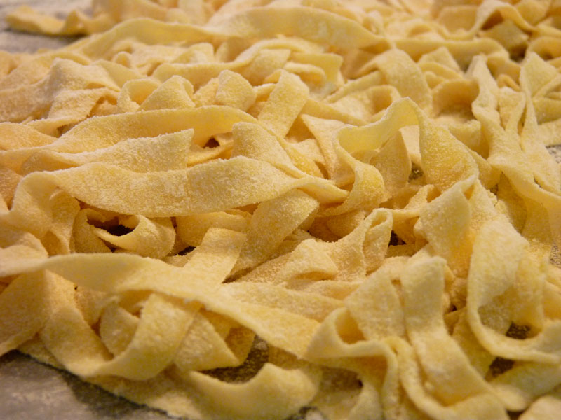

Pasta Fresca

Description
Making fresh pasta is much easier than many believe. If you have two hands and a bit of patience,
you can easily be making fresh pasta in no time flat. You'll find that once you've had the real,
fresh stuff, it'll be difficult to go back to the store-bought, dry variety.
Although it is possible to make this recipe without the use of any special tools, investing in a
hand-cranked pasta roller is worthwile. The adjustable rollers will make it so that your pasta is
always uniformly thick, which leads to the perfect cook. This recipe can be made in bulk, the pasta
cut and then frozen for later use without any major decrease in the quality of the end product.
Inredients
- 6 cups all-purpose flour
- 6 eggs
Method
- Heap the flour, and make a well in it. Break the eggs into the well. Beat eggs with a fork.
Stir into the flour at the bottom of the well with the fork until the dough in the center
is smooth or shiny
- With your hands, gradually incorporate the flour from outside of the well toward the center,
kneading gently until the mass of dough comes together. Knead the dough until it is smooth
and resilient. you may need to add more flour, or you may not be able to incorporate all of
the flour, depending on the humidity and the size of the eggs. If the dough is sticky or
extremely pliable, knead more flour into it
- Divide the dough into three portions, cover with plastic wrap or an overturned bowl, and
allow to rest for at least 30 minutes.
- Roll the dough out very thin on a lightly floured surface, one portion at a time. If you have
a pasta machine, follow the manufacturer's instructions for rolling out the dough into
sheets about 1 millimeter thick. Use as desired.